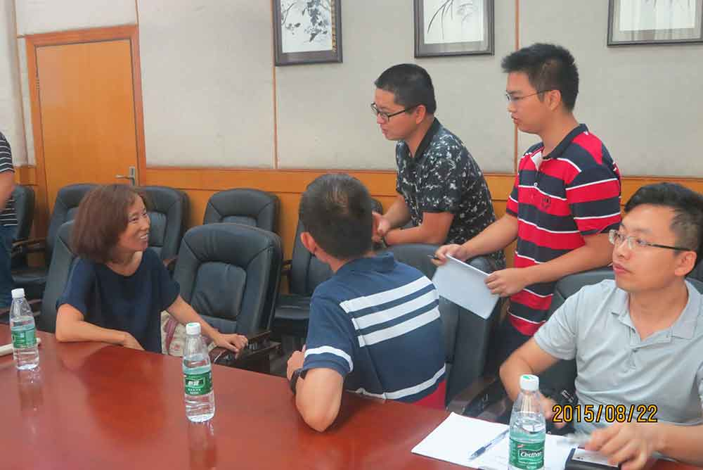
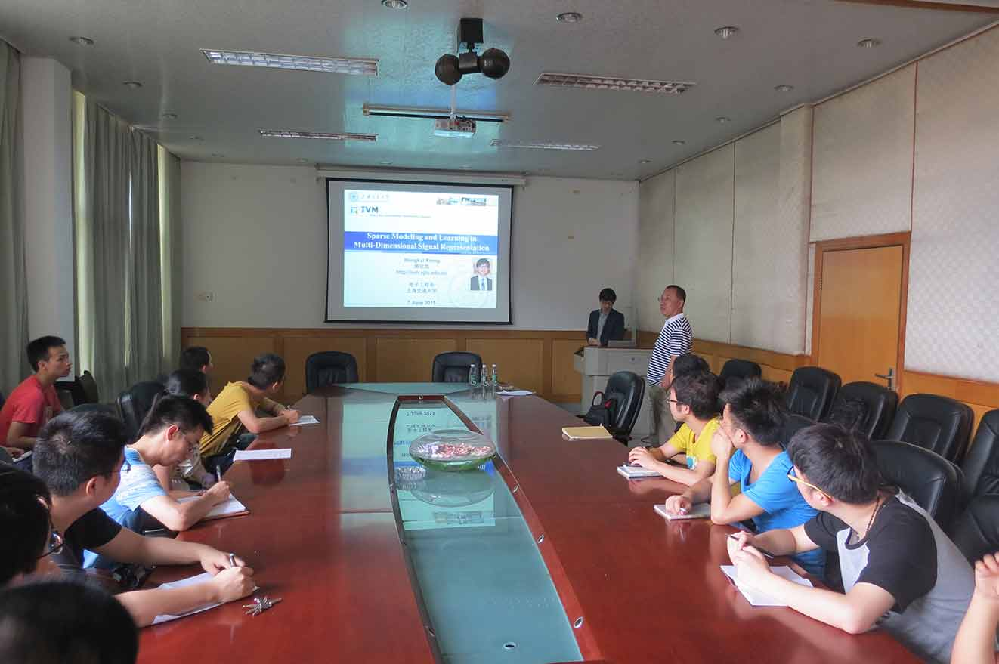

学术交流
-
2021年11月23日，国际知名遥感专家，IEEE Fellow，意大利帕维亚大学电子信息系教授Paolo Gamba应邀为实验室团队作学术报告
-
2021年11月18日，IEEE Fellow，德国宇航中心教授Mihai Datcu应邀为实验室团队作学术报告
-
2021年9月24日，法国格勒诺布尔理工学院Jocelyn Chanussot教授与实验室团队进行学术交流
-
2021年7月19日，IEEE Fellow，马里兰大学电机工程系终身教授Chein-I Chang应邀为实验室团队作学术报告
- 李树涛教授带队前往大疆创新科技有限公司交流合作
- 2020年12月23日李树涛教授带队与澳门大学进行学术合作交流
- 2020年12月22日，密西西比州立大学电气与计算机工程系Qian Du教授应邀为实验室师生作学术报告
- 2020年12月18日IEEE Fellow，南洋理工大学计算机科学与工程学院Weisi Lin教授应邀为实验室师生作学术报告
- 2020年12月14日富士通研发中心孙俊博士来访交流
- 2020年11月27日中国工程院院士何友来访交流指导工作
- 2020年11月19日IEEE Fellow、中国科学技术大学吴枫教授为实验室团队作学术报告
- 2020年10月22日实验室团队主持召开遥感前沿科技发展论坛
-
2018年1月21日，IEEE Fellow，马里兰大学电机工程系终身教授、Chein-I Chang应邀为实验室团队作学术交流研讨
- 李树涛教授带领实验室团队赴西班牙参加第38届国际地球科学与遥感大会
- 2017年6月28日IEEE Fellow，罗德岛大学电气、计算机与生物医学工程系主任何海波教授受邀来实验室作学术报告并交流研讨
- 李树涛教授带领实验室团队参加第37届国际地球科学与遥感大会
-
2016年5月13日，华中科技大学白翔教授应邀为实验室团队作学术交流报告
- 李树涛教授应邀在多源遥感数据融合国际研讨会做报告
- 2015年11月3日，新南威尔士大学信息技术与电气工程学院的高级讲师 Xiuping Jia来访交流
- 2015年9月29日，苏州大学电子信息学院信息工程系的陈新建教授来访交流
- 2015年8月22日，西班牙埃斯特雷马杜拉大学通信与计算机系的高光谱实验室主任Antonio Plaza教授来访交流
- 2015年8月22日，中山大学地理科学与规划学院的李军教授来访交流

- 2015年6月19日，富士通研发中心孙俊博士来访交流
- 2015年6月10日，密西西比州立大学电气与计算机工程系Dr. Qian Du来访交流
- 2015年6月7日，上海交通大学图像通信与网络工程研究所熊洪凯教授来访交流

- 2015年5月15日，悉尼科技大学助理教授Ivor W Tsang来访交流